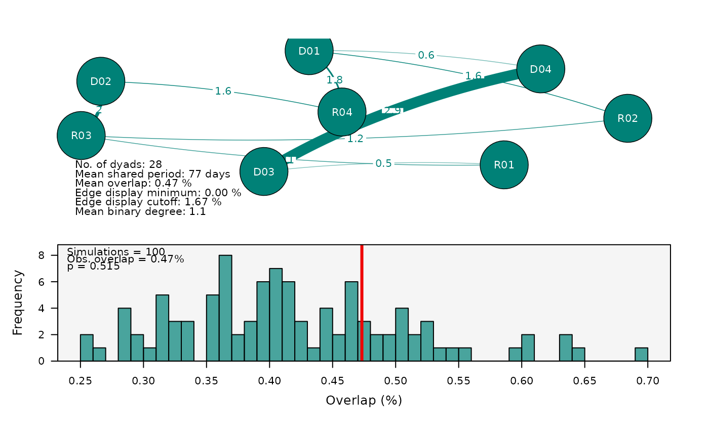

This function plots a network of estimated pairwise overlaps between
individuals or a histogram showing the distribution of overlaps from null model permutations,
or both. If only overlaps are provided, it plots a network where each node represents
an individual, with edges indicating the extent of spatial overlap between pairs.
Thicker edges represent higher overlap. If only random.results are provided, it plots
a histogram showing the distribution of overlaps from the null model permutations.
This helps to identify whether the observed overlaps are significantly different from
what would be expected by chance. If both are provided, it plots both the network
and the histogram.
Usage
plotAssociations(
overlaps = NULL,
random.results = NULL,
color.by = c("group", "single"),
scale.nodes.by = NULL,
discard.missing = FALSE,
min.val = NULL,
cut.val = NULL,
group.order = NULL,
plot.stats = TRUE,
legend.inset = c(-0.02, 0),
network.layout = "spring",
network.repulsion = 0.1,
nodes.color = NULL,
nodes.size = c(1.2, 2.2),
nodes.label.scale = FALSE,
nodes.label.color = "white",
edge.color = NULL,
edge.curved = 0.5,
edge.width = 1,
edge.label.color = NULL,
edge.label.font = 1,
background.color = "grey96",
overlap.line.color = "red2",
overlap.line.lwd = 3,
overlap.line.lty = 1,
hist.side = c("bottom", "right"),
standardize.edge.weights = TRUE,
standardize.freqs = FALSE,
main = NULL,
ncol = NULL,
cex = 1,
file = NULL,
width = NULL,
height = NULL,
res = 300,
...
)Arguments
- overlaps
A data frame containing the pairwise overlap data. Should be the output from the
calculateAssociationsfunction (a mobyNetwork).- random.results
The null-model output of
randomizeAssociations.- color.by
How to colour the nodes: "group" (default) assigns a colour per ID group, or "single" uses a single colour for all nodes.
- scale.nodes.by
Numeric vector to scale the nodes. Length should match the number of IDs in overlaps.
- discard.missing
Logical. If TRUE, excludes individuals without detections and null pairwise comparisons from the network. Defaults to FALSE.
- min.val
Minimum value for overlap threshold. Can be a single value (used for all networks) or a vector with one value per network. Defaults to 0.
- cut.val
Cutoff value for overlap threshold. Can be a single value (used for all networks) or a vector with one value per network. Defaults to the 90% quantile of the overlap values.
- group.order
A vector specifying the order in which each group comparison type should be plotted. This parameter can also be used to select and plot only a subset of the available comparisons. When set to
NULL(the default), all comparisons are plotted in their original order.- plot.stats
Logical. If TRUE, additional network metrics are plotted below each network. Defaults to TRUE.
- legend.inset
Optional. Specifies how far the legend is inset from the null model histogram margins. If a single value is given, it is used for both margins; if two values are given, the first is used for x- distance, the second for y-distance. Defaults to c(-0.02, 0).
- network.layout
Layout algorithm for the network (see
qgraph). Defaults to "spring".- network.repulsion
A scalar controlling the repulsion radius in the spring layout of the network visualization. This value is passed to the
repulsionargument ofqgraph::qgraph. Lower values (e.g., 0.05) reduce node separation, while higher values (e.g., 0.5) increase spacing to avoid clustering. Useful for generating alternative spatial arrangements. Defaults to 0.1.- nodes.color
Color(s) for the nodes.
- nodes.size
Numeric vector of length 2, indicating the minimum and maximum node sizes. Defaults to c(1, 2.2).
- nodes.label.scale
Logical. If TRUE, scales node labels. Defaults to FALSE.
- nodes.label.color
Color of the node labels. Defaults to white.
- edge.color
Color(s) for the edges. Can be a single value (used for all networks) or a vector with one value per network. Defaults to NULL, which averages node colors.
- edge.curved
Numeric value or logical indicating the curvature of the edges. Defaults to 0.5.
- edge.width
Numeric value scaling all edge widths uniformly (default = 1). Larger values make all edges thicker, smaller values make them thinner.
- edge.label.color
Colour of the edge labels. If NULL (default), inherits
edge.color.- edge.label.font
Font type for edge labels (1 is plain, 2 is bold, 3 is italic, 4 is bold and italic, 5 is symbol font). Defaults to 1.
- background.color
Background color of the plot. Defaults to "grey96".
- overlap.line.color
Color of the line representing observed overlap in the null model plot. Defaults to "red2".
- overlap.line.lwd
Line width of the observed overlap line. Defaults to 3.
- overlap.line.lty
Line type of the observed overlap line. Defaults to 1.
- hist.side
Position of the null model histogram relative to the network plot, either "bottom" or "right". Defaults to "bottom".
- standardize.edge.weights
Logical. If TRUE, edge widths are standardized across all networks so they are directly comparable. Defaults to TRUE.
- standardize.freqs
Logical. If TRUE, standardizes frequencies in the null model plot. Defaults to FALSE.
- main
Optional overall title drawn above the panel grid.
- ncol
Number of columns for the plot layout. Defaults to NULL.
- cex
Global expansion factor scaling all text (titles, node/edge labels, axes, legend). Defaults to 1.
- file
Optional output file. If
NULL(the default), the figure is drawn on the current graphics device - the usual interactive behaviour. If a file path is supplied, moby opens a graphics device chosen from the file extension (.pdf,.svg,.png,.jpg/.jpeg,.tif/.tiffor.bmp), draws the figure to it, and closes the device automatically (also if an error occurs). For multi-page or batch workflows, keepfile = NULLand manage the device yourself (e.g.pdf(...); plot...(); dev.off()).- width, height
Output size in inches. Used only when
fileis supplied. IfNULL(default), a size is derived from the figure's structure (e.g. the number of individuals or panels). These defaults are sensible starting points, not guarantees: dense or unusual figures may still need you to setwidth/heightexplicitly. The two can be set independently.- res
Resolution in pixels per inch, for raster formats only (
.png,.jpg,.tif,.bmp); ignored for vector formats (.pdf,.svg). Used only whenfileis supplied. Defaults to 300.- ...
Further arguments passed to
qgraph.
Value
Invisibly, a tidy per-comparison-type data frame of network statistics (number of dyads, mean overlap, mean shared monitoring days, mean binary degree, and the edge display thresholds).
Examples
# Pairwise co-occurrence network from a wide time-bin x individual table
wide <- createWideTable(rays, value.col = "station")
#> Warning: - 'id.col' converted to factor.
#> Warning: 3 (ID, time-bin) combination(s) had multiple differing values; the first was kept. Aggregate upstream (e.g. calculateCOAs) to control this.
#> Tied (ID, time-bin) instances (first value kept):
#> timebin ID ties
#> 1898 2023-06-14 11:00:00 D03 ST01 (1) | ST06 (1)
#> 2163 2023-04-24 05:00:00 D04 ST01 (4) | ST05 (4)
#> 5302 2023-06-25 16:00:00 R04 ST03 (1) | ST05 (1)
assoc <- calculateAssociations(wide)
#> Calculating overlap - complete monitoring duration
#> Total execution time: 0.03 secs
if (requireNamespace("qgraph", quietly = TRUE)) {
plotAssociations(assoc)
}
#>
#> Association network
#> ------------------------------------------------------
#> Individuals: 8
#> Comparisons: All
#> Metric: association index
#> Total dyads: 28
#> Shows: network
#> ------------------------------------------------------
 # Overlay the null-model histogram from a permutation test
# \donttest{
if (requireNamespace("qgraph", quietly = TRUE)) {
rand <- randomizeAssociations(wide, assoc, iterations = 100, random.seed = 1)
plotAssociations(assoc, rand)
}
#> Total execution time: 0.18 secs
#>
#> Association network
#> ------------------------------------------------------
#> Individuals: 8
#> Comparisons: All
#> Metric: simple-ratio
#> Total dyads: 28
#> Shows: network + null-model histogram
#> ------------------------------------------------------
# Overlay the null-model histogram from a permutation test
# \donttest{
if (requireNamespace("qgraph", quietly = TRUE)) {
rand <- randomizeAssociations(wide, assoc, iterations = 100, random.seed = 1)
plotAssociations(assoc, rand)
}
#> Total execution time: 0.18 secs
#>
#> Association network
#> ------------------------------------------------------
#> Individuals: 8
#> Comparisons: All
#> Metric: simple-ratio
#> Total dyads: 28
#> Shows: network + null-model histogram
#> ------------------------------------------------------

# }